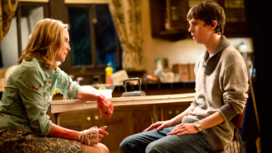

„ჯერ ოცნებობ, შემდეგ კვდები“ (ინგლ. First You Dream, Then You Die) — „ბეიტსის მოტელის“ საპრემიერო ეპიზოდი, რომელიც ეთერში 2013 წლის 18 მარტს გავიდა.
| ჯერ ოცნებობ, შემდეგ კვდები | |
|---|---|
|  | |
| ეპიზოდის ინფორმაცია | |
| სეზონი 1 | ეპიზოდი 1 |
| მშობლიური სახელწოდება: | First You Dream, Then You Die |
| ეთერში გას. თარიღი: | 18 მარტი, 2013 |
| მაყურებლები: | 3.04 მილიონი |
| სცენარის ავტორ(ებ)ი: |
• კარლტონ კუზი • კერი ერინი • ენტონი ციპრიანო |
| რეჟისორი: | ტაკერ გეიტსი |
| ეპიზოდების ქრონოლოგია | |
| ← წინა | მომდევნო → |
| არ არის | „მშვენიერი ქალაქი აგირჩევია, ნორმა...“ |
| ფოტოები (0) / ვიდეოები (0) | |
„ჯერ ოცნებობ, შემდეგ კვდები“ (ინგლ. First You Dream, Then You Die) — „ბეიტსის მოტელის“ საპრემიერო ეპიზოდი, რომელიც ეთერში 2013 წლის 18 მარტს გავიდა.
მიმოხილვა
სემ ბეიტსის გარდაცვალების შემდეგ მისი ვაჟი, ნორმანი, და მეუღლე, ნორმა, ყიდულობენ მოტელს და სახლს. ნორმანი დედამისს ეკამათება და სკოლის წვეულებას ესწრება, ხოლო ნორმას ქალაქის შერიფთან და მოტელის განრისხებულ ყოფილ მფლობელთან უწევს გამკლავება.
სიუჟეტი
ტელევიზორი აჩვენებს ფილმს „მისი გოგონა პარასკევია“ (ინგლ. His Girl Friday), რა დროსაც ნორმანს თავის საძინებელში ეღვიძება. ის დედამისის ძებნას დაიწყებს, თუმცა მის ნაცვლად აღმოაჩენს მამამისს, რომელიც ავტოფარეხის იატაკზე უსულოდ წევს. შეშფოთებული ნორმანი სახლში აირბენს, დედამისს ეძახის და მას საბოლოოდ მიაგნებს. ნორმა მას ავტოფარეხში გაჰყვება, სადაც ნორმანი მამამისის სხეულთან ტირის.
ექვსი თვის შემდეგ ნორმა ყიდულობს ძველ მოტელს და მის უკან მდებარე სახლს. ნორმანს თეთრი ფიჭვის ყურეში გადმოსვლა დიდად არ ახარებს, თუმცა ბედნიერი ნორმა მას მოტელსა და სახლს წარუდგენს. ის ამბობს, რომ აქ გადმოსვლა მათ ახალი ცხოვრების დაწყების საშუალებას აძლევს. ნორმანი დედამისს დაეთანხმება, რომ ყველაფრის ახლიდან დაწყებას შეეცდება. მოგვიანებით, ნორმანი მანქანიდან ბარგს გადმოზიდავს და სახლში წაღებისას ფანჯრიდან ნორმას ხალათში დაინახავს, რის გამოც შეყოყმანდება.
მომდევნო დღეს სკოლაში წასვლამდე ბრედლი მარტინი და მისი ცნობისმოყვარე მეგობრები ნორმანს შეხვდებიან. კენედი მათ თავისი მანქანით სკოლაში მიყვანას სთავაზობს, რის შემდეგაც ბრედლი ნორმანს კალთაში უჯდება და ეუბნება, რომ თეთრი ფიჭვის ყურის საშუალო სკოლის შესახებ ნებისმიერი კითხვის გაჩენის შემთხვევაში დაურეკოს. ინგლისური ენის გაკვეთილის შემდეგ მასწავლებელი, ბლერი, ნორმანს ესაუბრება მის განათლებაზე და ურჩევს, რომ სირბილით დაკავდეს.
ამასობაში, ნორმას ურეკავს მისი მეორე ვაჟი, დილანი, რომელიც შეურაცხყოფილია იმ ფაქტით, რომ დედამისმა არაფერი უთხრა გადასვლის შესახებ. ნორმა დილანს ყურმილს უკიდებს, როცა გაიგებს, რომ ის ფულის სათხოვნელად ურეკავდა.
ნორმანმა მასწავლებლის რჩევა გაითვალისწინა და სირბილის შემდეგ სახლში გვიან ბრუნდება, თუმცა ნორმა ამით განაწყენდება და ეუბნება, რომ სკოლის შემდეგ მოტელის საქმეებში მისი დახმარება სჭირდება. ის ნორმანს სპორტით დაკავების ნებას მაინც რთავს, რადგან არ უნდა ისეთი დედა იყოს, რომელიც შვილს სადმე მონაწილეობის მიღებაში ხელს უშლის, თუმცა ამბობს, რომ მთელ საქმეს ისევ მარტო გააკეთებს, როგორც ყოველთვის და მადადაკარგული ნორმანს მარტო ტოვებს.
ბეიტსებთან მომდევნო დღეს კით სამერსი მოდის და ამბობს, რომ ნორმა და ნორმანი მოტელის სამართავად მეტისმეტად გამოუცდელები არიან. მოტელი და სახლი მისი წინაპრების აშენებულია და აშკარაა, რომ იგი ვერ ეგუება ქონების დაკარგვას. ნორმა მას უებნება, რომ მეპატრონეები ახლა ის და ნორმანი არიან და მისი საკუთრებიდან გაეთრიოს. წასვლამდე კითი ამტკიცებს, რომ აქ ბინძური საიდუმლოებები იმალება.
ბრედლი და მისი მეგობრები იმავე ღამით მოდიან და ნორმანს ბიბლიოთეკაში მათთან ერთად წასვლას სთავაზობენ. ნორმა ნორმანის ნაცვლად პასუხობს, რომ წასვლას ვერ შეძლებს; შედეგად, ნორმანი დედამისს ამის გამო ეკამათება. გაბრაზებული ნორმანი სახლიდან გაიპარება და ბრედლის და მის მეგობრებს შეხვდება. ბრედლი გახალისდება, რადგან ნორმანმა მართლა დაიჯერა, რომ სასწავლად მიდიოდნენ. ამის ნაცვლად, ისინი წვეულებაზე წავლენ. ბრედლი და ნორმანი ერთმანეთს ეფლირტავებიან, თუმცა მალევე შეწყვეტენ, როცა ბრედლის შეყვარებული, რიჩარდ სილმორი მათთან მოვა.
სახლში კითი იჭრება და ნორმა თავის დასაცავად დანას აიღებს, თუმცა უშედეგოდ. კითი მას მაგიდაზე გადააწვენს, ხელბორკილებით დააბამს და გააუპატიურებს. ნორმანი ამ დროს სახლში ბრუნდება, კითს თავში ჩაარტყამს და დედამისს ათავისუფლებს. როცა კითი გონს მოდის, ნორმას ეუბნება, რომ „ეს მოეწონა“; განრისხებული ნორმა კითს დანას ჩასცემს იქამდე, სანამ არ მოკვდება. ამის შემდეგ ის ამბობს, რომ მომხდარის გასაჯაროებას ვერ დაუშვებენ და ნორმანს უხსნის, თუ როგორ გადაფარონ დანაშაული.
ისინი გაწმენდენ სამზარეულოს, სხეულს მოტელის ერთ-ერთ ოთახში შეიტანენ და აბაზანაში მალავენ. ამ პროცესში ხალიჩის ნაწილი სისხლით დაისვრება, ამიტომაც იძულებულები არიან, ხალიჩები რამდენიმე ოთახიდანაც აიღონ, რათა ეჭვი არ გამოიწვიონ. ერთ-ერთი ოთახის ხალიჩის ქვეშ ნორმანი იპოვის უცნაური ჩანახატებით სავსე წიგნაკს. შერიფი ალექს რომერო და მისი მოადგილე, ზაკ შელბი მოტელში მოდიან, სადაც ნორმანი და ნორმა ისე იქცევიან, თითქოს ყველაფერი რიგზეა. შერიფი ამაში დარწმუნებული არაა და ერთ-ერთი ოთახის დათვალიერებას მოითხოვს, შემდეგ კი — სააბაზანოს გამოყენებას (სადაც კითის ცხედარია). ნორმა ეუბნება, რომ ტუალეტი არ ირეცხება, თუმცა შერიფი მას მაინც გამოიყენებს. მან საშხაპის ფარდის უკან დამალული გვამი ვერ შეამჩნია. ამის შემდეგ ორივე ოფიცერი მიდის.
უძინარი ნორმანი მომდევნო დღეს სკოლაში არც ისე კარგ მდგომარეობაშია და გული აერევა. მას ემა დეკოდი უახლოვდება, რომელიც ამბობს, რომ კისტური ფიბროზითაა დაავადებული და იცის, როგორ დაეხმაროს.
იმავე ღამეს ნორმა და ნორმანი კითის სხეულის თავიდან მოსაშორებლად ნავით ტბაში შეცურავენ. როცა ნავსადგური ნელ-ნელა თვალს ეფარება, ნორმა მის შვილს ეუბნება, რომ ქალაქი ახალი შემოვლითი გზის აშენებას აპირებს, რაც მათ ბიზნესს გაანადგურებს. როცა ნორმა ამბობს, რომ მისი შვილისთვის არაფერი გაუკეთებია, ნორმანი უხსნის, რომ ის მისთვის ყველაფერია. საბოლოოდ, როცა ტბის საკმაოდ ღრმა წერტილს მიაღწევენ, ისინი ხალიჩაში გახვეულ წონით დატვირთულ კითის სხეულს წყალში აგდებენ.
მომდევნო დღეს ნორმა სიხარულით ადევნებს თვალს მოტელის წინ „მეზღვაურის მოტელის“ (ინგლ. Seafairer Motel) აბრის ჩამოხსნას და მის „ბეიტსის მოტელის“ (ინგლ. Bates Motel) აბრით ჩანაცვლებას. ის აღტაცებით აჩვენებს ნორმანს ახალ აბრას და თავდაჯერებით ამბობს, რომ შემოვლითი გზა არ აშენდება.
სადღაც, ბნელ ოთახში, ახალგაზრდა ქალი ჯაჭვებით არის დაბმული. უეცრად, ვიღაც შემოდის და მას ვენაში ნემსს უკეთებს.
მსახიობები
მთავარი
- ვერა ფარმიგა — ნორმა ბეიტსი
- ფრედი ჰაიმორი — ნორმან ბეიტსი
- მაქს ტირიოტი — დილან მასეტი (ხმა; ფიზიკურად - წაშლილი სცენა)
- ოლივია კუკი — ემა დეკოდი
- ნიკოლა პელცი — ბრედლი მარტინი
მოწვევით
- ვ. ერლ ბრაუნი — კით სამერსი
- ნესტორ კარბონელი — ალექს რომერო
- დევიდ კაბიტი — სემ ბეიტსი
- კიგენ კონორ ტრეისი — ბლერ უოტსონი
- მაიკ ფოგელი — ზაკ შელბი
სხვები
- რიჩარდ ჰერმონი — რიჩარდ სილმორი
- ემალინ ესტრადა — ჰაიდენი
- ჯენა რომანინი — ჯენა
- კონჩიტა კემპბელი — კენედი
- ბრიტნი უილსონი — ლისა
- სტივენ ბოერსმა — ბიჭი #1
- კრისტინ შატელენი — მარსი მაკლინი (წაშლილი სცენა)
საინტერესო ფაქტები
- ამ ეპიზოდის მაყურებელთა რაოდენობამ შეადგინა 3.04 მლნ-ს, რაც მას პირველი სეზონის ყველაზე ნახვად ეპიზოდად აქცევს.
- მიუხედავად იმისა, რომ მაქს ტირიოტი (დილან მასეტი) მთავარ პერსონაჟადაა მითითებული მითითებულია, ის ეპიზოდში ფიზიკურად მხოლოდ წაშლილ კადრში ჩნდება.
- როცა ნორმანი თავის საწოლზე იღვიძებს, ტელევიზორში გადის 1940 წლის ამერიკული კომედიური ფილმი „მისი გოგონა პარასკევია“ (ინგლ. „His Girl Friday“). ფილმის ამ სცენაში ბრიუს ბოლდუინი დედამისით დომინირებული თავის ცხოვრების შესახებ უყვება უოლტერ ბერნსს, რითაც პარალელი ევლება ნორმასა და ნორმანს შორის არსებულ ურთიერთობას.
- როცა ნორმანი თავის მშობლებს ეძებს, მაყურებლის ყურადღებას იქცევს დერეფნის კედლებზე გაკრული ჩიტების სურათები. ეს მიემართება ფილმ „ფსიქოს“, რომელშიც მოტელის კედლები შემკულია ჩიტების სურათებით.
- როცა ნორმანს მანქანიდან ბარგი გადმოაქვს, ფანჯრიდან დაინახავს ღამის პერანგში გამოწყობილ ნორმას. ეს მიუთითებს იმაზე, რომ ფილმში ნორმანი მოჭვრიტინე ტომი ხდება.
- მუსიკა, რომელსაც ნორმანი ავტობუსის გაჩერებასთან უსმენს, არის ბეთჰოვენის მესამე სიმფონია, op. 5 „საგმირო“. ფილმში „ფსიქო“ ნორმანს ფირსაკრავზე სწორედ ამ ნაწარმოების ფირფიტა უდევს.
- ნორმანს ბრედლი ადარებს „ღრმა, უძრავ ტბას“, რაც კვლავ მიემართება ფილმ „ფსიქოს“, რომელშიც ნორმანი ცხედრებს მოტელის მახლობელ ჭაობში აგდებს.
- კით სამერსი, რაღაც კუთხით, ჰგავს მარიონ კრეინს ფილმიდან „ფსიქო“. ორივე ანტაგონოსტია და სიუჟეტში დიდი ხნის განმავლობაში არცერთი მათგანი მონაწილეობს. ასევე, კით სამერსის სხეულის თავიდან მოშორებისას ნორმა და ნორმანი მას ზეწარში ახვევენ, მანქანის საბარგულში დებენ და წყალში ძირავენ. ფილმში „ფსიქო“ ნორმანი მარიონის ცხედარს ამგვარი მეთოდით აგდებს.
- ყასბის დანა, რომელსაც ნორმა კით სამერსის მოსაკლავად იყენებს, ზუსტად ისეთივეა, როგორითაც ნორმანი მკვლელობებს ჩადის ფილმში „ფსიქო“.
- ნორმა რომეროს ეუბნება, რომ მოტელის სააბაზანოში ტუალეტი გაფუჭებულია, რაც ასევე კავშირშია „ფსიქოსთან“. ფილმში მარიონმა თავისი ნაწერი დახია და ტუალეტში ჩარეცხა. ეს იყო პირველი შემთხვევა, როცა ფილმში ტუალეტის ჩარეცხვა აჩვენეს.
შენიშვნები გადაღებებიდან
მომენტი, როცა ნორმა წლების განმავლობაში დაგროვებულ რისხვას კით სამერსზე იყრის და მას დანას მუცელში განმეორებით უყრის, ნამდვილად ინტენსიურია, და ფარმიგას შესრულება კიდევ უფრო შთამბეჭდავი ხდება, როცა გაიგებთ, თუ იგი გადაღებისას რეალურად რას უყურებდა! „ბეიტსის მოტელის“ ნივთების ოსტატი ტერი უივერი ხსნის, თუ როგორ გადაიღეს ეს სცენა.
„ნორმას სახეზე ყოველი დარტყმისას სისხლის შხეფების რაოდენობის გაზრდის ეფექტი მივიღეთ ყალბი სისხლით სავსე სათლითა და ღრუბლით. დიახ, გადაღებამდე სულ მცირე ათი სხვადასხვა სისხლის ნიმუში გამოვცადეთ, რათა კადრისთვის საუკეთესო აგვერჩია.“